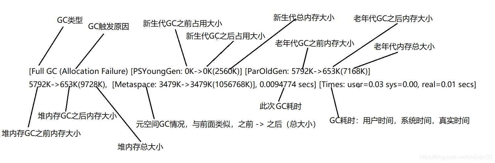

TreeviewCopyright © qgao 2021-* all right reserved, powered by aleen42
java项目运行时的日志和监控
参考：
1 日志和监控
可以在Java程序启动的时候加上一些命令参数，来把程序运行中的GC日志打印出来。
- -XX:+PrintGC 输出GC日志
- -XX:+PrintGCDetails 输出GC的详细日志
- -XX:+PrintGCTimeStamps 输出GC的时间戳（以基准时间的形式）
- -XX:+PrintGCDateStamps 输出GC的时间戳（以日期的形式，如 2013-05-04T21:53:59.234+0800）
- -XX:+PrintHeapAtGC 在进行GC的前后打印出堆的信息
- -Xloggc:../logs/gc.log 日志文件的输出路径
有些命令可能在不同的Java版本适用。比如在Java 11中，就会提示你：-XX:+PrintGC is deprecated. Will use -Xlog:gc instead。
而输出的日志格式，也会根据不同的Java版本和GC有一些细微的差别，这个可以具体根据自己项目上的Java版本和GC去对应具体的格式。
推荐GC日志与logback集成，这样可以利用logback的日志切割功能。
再配上可视化的监控工具和告警工具，就能够及时知道JVM的状态和趋势数据。开源的解决方案推荐的是Prometheus（使用jmx_exporter） + Grafana。

2 -XX:+PrintGCDetails
程序运行时输出gc日志：
"C:\Program Files\Java\jdk1.8.0_111\bin\java.exe" -Xmx10m -Xms10m -XX:+PrintGCDetails...
[GC (System.gc()) [PSYoungGen: 2025K->488K(2560K)] 7145K->5824K(9728K), 0.0012223 secs] [Times: user=0.00 sys=0.00, real=0.00 secs]
[Full GC (System.gc()) [PSYoungGen: 488K->0K(2560K)] [ParOldGen: 5336K->5792K(7168K)] 5824K->5792K(9728K), [Metaspace: 3479K->3479K(1056768K)], 0.0073629 secs] [Times: user=0.00 sys=0.00, real=0.01 secs]
[GC (Allocation Failure) [PSYoungGen: 0K->0K(2560K)] 5792K->5792K(9728K), 0.0003410 secs] [Times: user=0.00 sys=0.00, real=0.00 secs]
[GC (Allocation Failure) [PSYoungGen: 0K->0K(2560K)] 5792K->5792K(9728K), 0.0004555 secs] [Times: user=0.00 sys=0.00, real=0.00 secs]
[Full GC (Allocation Failure) [PSYoungGen: 0K->0K(2560K)] [ParOldGen: 5792K->5792K(7168K)] 5792K->5792K(9728K), [Metaspace: 3479K->3479K(1056768K)], 0.0032795 secs] [Times: user=0.00 sys=0.00, real=0.00 secs]
[GC (Allocation Failure) [PSYoungGen: 0K->0K(2560K)] 5792K->5792K(9728K), 0.0004670 secs] [Times: user=0.00 sys=0.00, real=0.00 secs]
[Full GC (Allocation Failure) [PSYoungGen: 0K->0K(2560K)] [ParOldGen: 5792K->653K(7168K)] 5792K->653K(9728K), [Metaspace: 3479K->3479K(1056768K)], 0.0094774 secs] [Times: user=0.03 sys=0.00, real=0.01 secs]
// 下面是堆内存总的概况，各区域所占大小，以及被使用情况
Heap
PSYoungGen total 2560K, used 20K [0x00000000ffd00000, 0x0000000100000000, 0x0000000100000000)
eden space 2048K, 1% used [0x00000000ffd00000,0x00000000ffd05360,0x00000000fff00000)
from space 512K, 0% used [0x00000000fff80000,0x00000000fff80000,0x0000000100000000)
to space 512K, 0% used [0x00000000fff00000,0x00000000fff00000,0x00000000fff80000)
ParOldGen total 7168K, used 6797K [0x00000000ff600000, 0x00000000ffd00000, 0x00000000ffd00000)
object space 7168K, 94% used [0x00000000ff600000,0x00000000ffca3750,0x00000000ffd00000)
Metaspace used 3486K, capacity 4498K, committed 4864K, reserved 1056768K
class space used 387K, capacity 390K, committed 512K, reserved 1048576K
Process finished with exit code 0
各名词解释：
- Full GC：对整个堆内存空间的一次垃圾回收
- GC：对年轻代空间的一次垃圾回收
- Allocation Failure：“分配失败”，即为新对象分派内存不够
- System.gc()：执行该方法触发的GC
2.1 对full gc条目的解析：

3 测试例子
public class GCDetailsAnalyze {
public static void main(String[] args) {
SoftReference<byte[]> softReference = new SoftReference<>(new byte[5 * 1024 * 1024]);
System.gc();
byte[] bytes = new byte[6 * 1024 * 1024];
}
}
输出日志如第2小节，代码与日志结合分析：
首先，
代码：首先软引用指向的对象5m，主动进行GC，这里的5m对象不会被回收；
日志：可以看出来
GC（ System.gc() ）日志， [ParOldGen: 5336K->5792K(7168K)]5m对象在老年代中，也并没有被回收；
接着，
代码：再创建一个6m对象，内存不够，JVM进行GC清理垃圾，会回收上面的5m对象；
日志：可以看出来Full GC（ Allocation Failure ）日志，[ParOldGen: 5792K->653K(7168K)]
5m对象在老年代中被回收了。